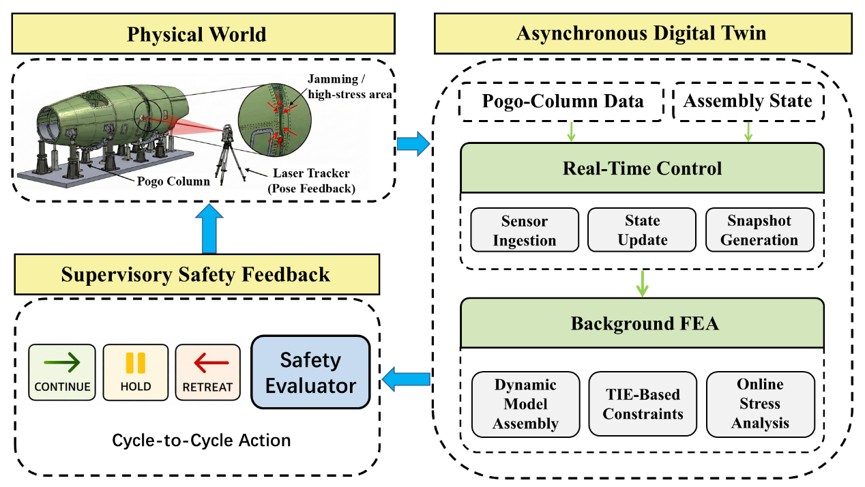

Quasi-real-time digital twin for robotic assembly: a physics-based multi-fidelity framework
Journal of Intelligent Manufacturing, 2026
A ROS 2-based digital twin that couples supervisory control with background finite-element analysis for flexible robotic assembly.